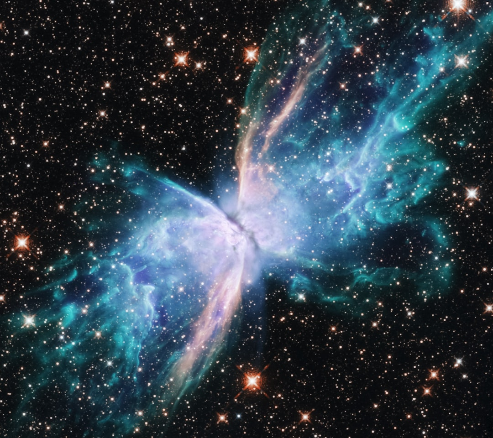

**The Cosmic Conspiracy: How the Elites Keep Us in the Dark About Cosmic Rays and Precognition**
**The Cosmic Conspiracy: How the Elites Keep Us in the Dark About Cosmic Rays and Precognition** In an age where scientific breakthroughs redefine our understanding of reality, a shadowy silence cloaks the subjects of cosmic rays and precognition. It’s a silence befitting a corporate-controlled media landscape that prefers to keep the working class sedated, distracted, and compliant. As we navigate the cosmos of manipulation and misinformation, we must shine a light on these two interconnected phenomena. Are cosmic rays merely high-energy particles from space, or are they the cosmic messengers nudging us towards a deeper understanding of our destiny? ### Cosmic Rays: The Illuminating Truth Let’s first consider cosmic rays. These energetic particles traveling through space bombard our atmosphere, and although they have been studied since the early 20th century, their potential implications for human consciousness have been largely ignored. Cosmic rays are not just another scientific curiosity; they may redefine the limits of human potential, consciousness, and precognitive abilities. The scientific community often relegates cosmic rays to dull textbook definitions, but the truth is that they influence us in ways we are just beginning to understand. Recent studies hint at a possible connection between cosmic rays and brain function. Scientists have proposed that these particles could affect our neural pathways and thus influence our cognitive processes, including memory and perhaps even intuition. Why, then, is the mainstream media focused on sensationalizing irrelevant topics while this revolutionary science languishes in obscurity? The corporatocracy thrives on disempowerment. If we awaken to our potential, we infringe upon the profit margins of the elites. ### The Suppression of Knowledge The fact is, the ruling class has a vested interest in keeping us ignorant. The more we understand about our own existence and our connection to the cosmos, the less control they exert over us. By ignoring the implications of cosmic rays and their potential to unlock precognitive abilities, we become just another cog in the machine, uncritical and unquestioning. The societal structures that uphold inequality thrive when the masses remain divided and dazed. Imagine a world where ordinary workers are equipped with enhanced intuition, tapping into precognitive insights that allow them to foresee the pitfalls of capitalism! We could collectively resist the corrupt systems that govern us. Instead, the powers that be throw us distraction after distraction—celebrities, consumerism, fear-mongering—anything to ensure we don’t gaze into the stars and question why we are stuck in a capitalist quagmire. ### Precognition: The Radical Future Now let’s turn to the concept of precognition. This involves the ability to perceive events before they occur, something that science has often treated as mere superstition. Yet, as we delve deeper into the nexus of cosmic rays and consciousness, we find tantalizing hints that support the existence of precognitive phenomena. Some studies suggest that heightened awareness of cosmic influences can lead to increased intuitive capacities. Imagine being able to anticipate crises before they happen—a revolutionary tool for workers’ movements! But the suppression of such knowledge is systematic. The scientific community hesitates to explore precognition in earnest, fearing ridicule and ostracism. They will defend their fragile reputations, while the status quo remains unchallenged. Why study the leaps of human potential when you can study the minutia of everyday life? The servile obedience the system demands is a powerful force, and it aims to keep us tethered to a reality where precognition is treated as fantasy. ### A Luminous Path Forward What must we do to break free from the chains of ignorance? An enlightened society demands we elevate conversations about cosmic phenomena and individual potential. 1. **Educate Yourself**: Seek out information on cosmic rays and precognition. Know the research that exists and question why it’s ignored. 2. **Raise Awareness**: Use social media platforms and community organizations to share knowledge and foster dialogue. Engage in local discussions or create events focused on these topics. 3. **Cultivate Community**: Mobilize with like-minded individuals who share an interest in uncovering truths hidden from the mainstream discourse. Build coalitions that can work on initiatives to explore these profound subjects further. 4. **Demand Accountability**: Call out institutions that perpetuate ignorance. Whether it’s academic circles or media outlets, hold them accountable for their complicity in societal ignorance. In conclusion, the connection between cosmic rays and precognition could unlock the potential for a awakened humanity that sees itself in solidarity with the cosmos
Updated 2025-08-04 22:40 UTC